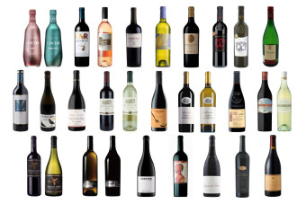

오늘 읽을만한 글
주제별로 분류된 다양한 글 모음
671
개의 글 │
 관심주제 설정
관심주제 설정
관심주제 설정
엔터
스포츠
자동차
웹툰
경제
추천·구독
레시피
리빙


 레시피
어묵전 부치기 냉장고 파먹기 만든 집에서 간단한 술안주
레시피
어묵전 부치기 냉장고 파먹기 만든 집에서 간단한 술안주
요즘 요리를 하다보니 이것저것 남은것이 많네요. 어묵도 어정쩡하게 남았고, 짜투리채소도 넘 많고요. 그래서 냉장고 파먹기도 할겸 남은 채소와 어묵으로 어묵전을 부쳤어요. ...
철든철부지
· 2주일 전
 레시피
박나래 어묵탁 끓이는법 소주안주 꼬치 어묵탕 레시피 매운어묵탕
레시피
박나래 어묵탁 끓이는법 소주안주 꼬치 어묵탕 레시피 매운어묵탕
박나래 어묵탁 끓이는법 소주안주 꼬치 어묵탕 레시피 매운 오뎅탕 끓이는법 사각어묵 10장 가래떡 2줄 대파 썰은것(1~2) 삶은달걀 1개 멸치 칼국수 라면 스프 2/3봉지 꽃게탕면...
은솔희섭mom
· 1개월 전

레시피
2022 추석 명절 선물하기 좋은 와인 22종
다가오는 추석 명절에 가족과 친지, 가까운 지인들이 모일 때 센스있는 선물은 모임의 분위기를 한 껏 더 따뜻하고 풍성하게 한다. 와인을 선물로 고마운 마음을 전하거나 풍성한...
소믈리에타임즈
· 1주일 전
 레시피
라이스페이퍼요리 치즈어묵꼬치 사각어묵요리 집에서 맥주안주 만드는법
레시피
라이스페이퍼요리 치즈어묵꼬치 사각어묵요리 집에서 맥주안주 만드는법
라이스페이퍼요리 치즈어묵꼬치 사각어묵요리 집에서 맥주안주 만드는법 몇일 전 인스타를 보다가 추천 피드에서 만들기는 간단하지만 맛있어 보이는 라이스페이퍼요리를 봤는...
초대리
· 2주일 전